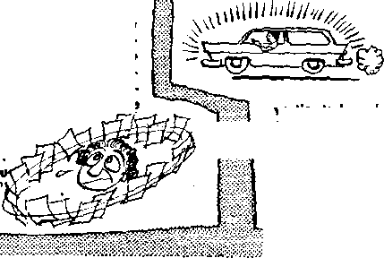

Hie Ecumenical Council and Religious Unity
Gaping with Summer Heat
Hie Silent Language of the Deaf
Shod Additives Get the Spotlight
AUGUST 22. 1960
THE MISSION OF THIS JOURNAL
News sources that are able to keep you awake to the vital Issues of our times must be unfettered by censorship and selfish interests. “Awake!” has no fetters. It recognizes facts, faces facts, is free to publish facts. It is not bound by political ambitions or obligations; ft is unhampered by advertisers whose toes must not be trodden on; it is unprejudiced by traditional creeds. This journal keeps itself free that it may speak freely to you. But it does not abuse its freedom. It maintains integrity to truth.
"Awake!” uses the regular news channels, but is not dependent on them. Its own correspondents are on all continents, in scores of notions. From the four corners of the earth their uncensored, on-fhe-scenes reports come to you through these columns. This journal's viewpoint is not narrow, but is international. It is read in many nations, in many languages, by persons of all ages. Through its pages many fields of knowledge pass in review—government, commerce, religion, history, geography, science, social conditions, natural wonders—why, its coverage is as broad as the earth and as high os the heavens.
”Awake!" pledges itself to righteous principles, to exposing hidden foes and subtle dangers, to championing freedom for all, to comforting mourners ond strengthening those disheartened by the failures of a delinquent world, reflecting sure hope for the establishment of a righteous New World.
Get acquainted with “Awake!" Keep awake by reading "Awake!"
Pu bushed Simultaneously in the United States by the WATCHTOWER BIBLE AND TRACT SOCIETY OF NEW YORK, INC. 117 Adams Street Brooklyn 1, New York, U.S.A.
and in England by
WATCH TOWER BIBLE AND TRACT SOCIETY
Watch Tower House, The Ridgeway London N.W. 7. England
N. H. Knorr, President Grant Suiter. Secretary
Printing this issue: 3,075,000 4d a copy (Australia, 5cf)
HAwaksP’ h pobllshed in the folhwln* 21 languid: Semimonthly—-Afrikaans. ClnyEUija, Banish, Dutch. Rug-]1f,h. Finnish, French, Gorman. Greek, Italian, Japanese, Niirwogian, Porrngueae, Spanish, Swedish, Tagalog, Zulu. Monthly—Indonesian, Korean. Polish, Ukrainian.
Remittances ter subscript ions should be sent- to the office In your wintry. (Irlicrvrist) send ycuir rc.nlitaitce in I/Ottdon. NcUco of expiration is sent at two issues before subscription expires.
I
CHANGES OF ADDRESS shnqld reaeh us thirty days before your moving date. Give u$ ya nr aid and now address (If possible, your old address labaD. Watch Tower, Watch Tower House, The Ridgeway, London N.W. 7, England.
Entered as second-class matter nt Brooklyn, N.Y. Printed In Enniauii
Yearly subscription rates
Office; for remlmnnlhly editions
America, U.S., 117 Adams si., Brooklyn 1, NX $1 Australia, 11 Beresford Rd., Strathfield, N.g.W.
Canada, 1'0 RrldgeUnd Ave., Toronto 19, Ont.
England, Watch Tower ((ou^e.
Naw Zealand, (521 New North Rd., Auckland, S.W. 1 7/-Sooth Africa, Private Bag. Elandsfontein, TvL ?/-
Monthly editions cost half the above raira.
The Bibfo translation nsad M ‘Awake!” t$ the New World Translation of the Holy Scriptures. When other translations are used the fol I owing symbols will appear behind the citations:
4$ - .AmericMTi Standard Version AT— Ait American Tbilisi Alien 4 L' - Authorised Version (1811) D(i - J. N. Darby’s version
Dat — Catholic Douay venion ED— The Emphat.in Dlaglott JP - Jewish Publication 8oc. Le - Isaac Leeper's version
J.ijites .Muiiit-.r. s vershm RO — J. B. Hiitticrlhiin’s version PS — RcviNC-l .Stu mim'd Version ¥<? - Ruber! Young's vcrsJcn
CONTENTS
The Ecumenical Council and
The Silent Language of the Deaf
Food Additives Get the Spotlight
Sea Food Delicacies in Zeeland
“Your Word Is Truth”
Understanding and Love in the
THE building work that has the greatest and most lasting benefits is not that done with steel, concrete, brick or wood. It is not the
is the first generation of humans,’ he explained, ‘which holds the veto power over the continuation of human life.’ The hope for salvation, he said, lies in
constructing of magnificent buildings, comfortable homes or giant space-traveling rockets. It is not the building of the many things in which a technical society prides itself. Instead it is the moral building up of the people who use these things. Unless they learn to live by high moral standards, how can they prevent their advanced technology from destroying them?
Because the present world society is technically high but morally low, fears are constantly being expressed about the grave threat of nuclear annihilation that hangs over it. An editorial in The Evening News of Harrisburg, Pennsylvania, said: “If there is one thing the world doesn’t want, it is war. If there is one thing no country wants to do unless it can see for itself that the others do the same, it is to scrap the weapons that make war possible. As a result, the world is sitting on a powder keg, wondering how to prevent the catastrophic spark—even as more and more powder is stuffed into the keg.”
Reporting on a speech made by Dr. Brock Chisholm, the Ottawa Journal expressed similar fears for the future. “ ‘This training *our children and our grandchildren’ to achieve greater levels of maturity than those now known and to be able to answer questions the present generation cannot.”
The building work that is of greatest importance today is moral and spiritual upbuilding. It is a work that transforms human thinking so that it comes in line with the high moral principles of God’s written Word. If all people lived by those principles, there would be no threat of nuclear self-annihilation. All would have love for one another and would be looking out for one another’s welfare instead of selfishly seeking only personal advantage and profit. But not all people are this way and few show any inclination to change. Nevertheless, moral upbuilding is vitally needed, as it builds for the future.
The apostle Paul spoke about the transformation in thinking that must be made to have a peaceful and secure world when he said: “Quit being fashioned after this system of things, "but be transformed by making your mind over.” “You should put away the old personality which conforms to your former course of conduct and which is being corrupted according to his deceptive desires; but . . . you should be made new in the force actuating your mind, and should put on the new personality which was created according to God’s will in true righteousness and loving-kindness.”—Rom. 12:2; Eph. 4:22-24.
God’s servants are well aware that they cannot build up the moral standards of persons who refuse to put on a new personality according to God’s righteousness. They know that their work of moral and spiritual upbuilding has little effect upon the world of mankind as a whole, but that does not mean their efforts are wasted. Worth-while work that is for the good of mankind is never wasted effort.
It is interesting to note what Robert Dieffenbacher said in the New York World-Telegram and Sun about the work of godly people: “Those who know God intimately will leave their stamp of influence where it may not be obvious. They will not be revered nor honored in the market place. They will not receive medals for bravery nor will they leave golden endowments to make their memory last. Those who walk the lonely way with God will not be failures. They will leave their persistent influence on those whose lives they have touched. They will not need the praise of men because they will have the reward of eternity.” The upbuilding work that Jesus did 1900 years ago brought no praise from the world and no material rewards; yet it was a work of peace in a world that did not know peace. The same is true today with those who follow his footsteps.
Much effort is required to call repeatedly at the homes of people, as Christ’s apostles did, to urge them to consider God’s purposes and the high principles of his Word. It is worth-while work that is for the good of mankind, although few persons actually appreciate it. Such God-honoring work is not in vain. “Become steadfast, unmovable, always having plenty to do in the work of the Lord, knowing that your labor is not in vain in connection with the Lord.” —ICor. 15:58.
By following Christ’s example in building up faith in God’s Word and respect for high moral standards, a person not only helps other people but brings divine approval upon himself. He is laying up a good record that in due time will bring an eternal reward. Jesus spoke about this when he said: “Store up for yourselves treasures in heaven, where neither moth nor rust consume, and where thieves do not break in and steal.” (Matt. 6:20) A good record with God is a far greater treasure than material wealth and influence in this greedy world. The benefits of this treasure continue after death, as they assure a resurrection to eternal life in God’s due time. “Happy are the dead who die in union with the Lord from this time onward. Yes, says the spirit, let them rest from their labors, for the things they did go right with them.”—Rev. 14:13.
While mighty nations work feverishly to build up their atomic arsenals for a war they fear to see, Jehovah’s servants quietly go among the people building faith in God’s Word and respect for his high standard of morals. They bring hope for a peaceful world by means of God’s kingdom. Notwithstanding the frightening threat of atomic annihilation that hangs over the world, they are building for the future by gathering out of the nations people who are willing to transform their minds and their lives to match the righteous requirements of God’s Word. According to God’s promise, these people will inherit the earth under the peaceful and secure rule of the Prince of Peace. This worth-while work brings hope and comfort to a generation that lives in fear.
IS THE unifying of all Christian churches just a dream? Is there a possibility that divided Christendom could be united? By recognition of what supreme authority
us make an end to the divisions." From the start the pope in a diplomatic style left open wide areas for speculation. He did not mention time or place, neither did he
could such unity be attained? For nine hundred years, since the breach between the Church of Rome and the Eastern Orthodox Church, the question of unity has been a burning one. With succeeding years bringing further divisions, resulting in violence and hatred among professed Christians, the desirability of unity has been recognized by all.
Christendom was therefore brought to attention on January 25, 1959, when Pope John XXIII announced his intention of calling an ecumenical council. This council, according to the official organ of the Vatican, Osservatore Romano, is to “serve towards the edification of Christian people, but at the same time it will serve as an invitation to the separated denominations to strive towards unity, for which so many souls from all ends of the earth are yearning today." Five days after the initial announcement, the pope, in a most conciliatory manner and without qualifications, beckoned: “We do not want to stage a historical process, neither do we wish to try to show up who was right and who was wrong. The responsibility is divided. We just want to say: Let us get together, let state the subjects to be considered at the council or who would be invited to attend, but, in his words, the council “will... in its essence be an invitation to our separated brothers who bear the name Christian, so that they may return to the common fold whose guidance and supervision Christ entrusted to Peter," The pope’s stated hope was that the result would be that “a new Pentecost may be the portion of the whole Christian family.”
Catholic, Orthodox and Protestant circles alike read in statements like these the possibility of restoring the unity of the Christian churches. Many foresaw a general church assembly to which all Christian churches would convene to deliberate on this vital subject of unity.
What Are Ecumenical Councils?
Such high hopes and anticipations have diminished with the passing of time. Misunderstanding has been prevalent as to just what a Catholic ecumenical council is. Ecumenical comes from the Greek word oikumene, meaning “the inhabited world.” An ecumenical council therefore has representatives from all the world.
There are two main groups in Christendom that claim to be ecumenical, that is, the church of the whole inhabited world. They are the Roman Catholic Church and the Ecumenical Movement with its World Council of Churches in Geneva. This council is composed of 171 churches throughout the whole earth, forming a union of all non-Roman Catholic Christendom, with the major exception of the Patriarchate of Moscow. Hopes are now entertained that even the Russian church will join the Ecumenical Movement. Expressing these hopes, Dr. Vissert t’Hooft, general secretary for the council, after a recent visit to Moscow said: “If one day the Russian Church would join the Ecumenical Movement, then only the Roman Catholic Church would be remaining outside.” Could it be that Rome is beginning to feel isolated, and therefore is trying to lift the Eastern Orthodox Churches out of the World Council of Churches and reunite them with the Roman Catholic Church ?
During the past 1,635 years the Roman Catholic Church has had twenty ecumenical councils. The first of these was the famous council in Nicaea of Asia Minor, A.D. 325, which was summoned by the pagan emperor Constantine, who, it is reported, also gave the opening address. The last one was the First Vatican Council, held from December 8, 1869, to July 18, 1870. The proposed twenty-first ecumenical council will be known as the Second Vatican Council and is scheduled to open in 1962.
History tells us that the first eight councils were convened, not by popes, but by Roman emperors. They were called and held without the consent of the pope. Catholic historian and theologian Hubert Jedin writes on this: “The . . . violently disputed question as to whether the Emperors in summoning these old councils previously applied for the consent or the order of the bishops of Rome, may, according to the facts, be answered in the negative.” The second Catholic ecumenical council, which was held in Constantinople, was convened by Emperor Theodosius and began in May, A.D. 381. According to Jedin, “Pope Dama-sus was neither present himself nor represented." Even the ambitious Leo I, who declared himself pope in 440 and proclaimed his new theocracy, setting a tiara upon his own head as symbol of universal sovereignty, was not able to c;aU a council. Jedin writes: “Already on October 13, 449, Leo I requested the Emperor in the name of the Western bishops to summon a new council in Italy. Twice he renewed his request, but without success. It was Marcian, the successor of Theodosius II, who granted his request and convened a new council on May 17, 451, but not in Italy” as Leo I had requested. The second council to be held in Constantinople was opened on May 5, 553, without Pope Vigilius, yes, in spite of his protest.
The battle as to whether the council was above the pope raged for a long time, until the Vatican Council of 1870, when the infallibility of the pope was defined and primacy over the council was granted the pope. So now, according to the law of the Roman Catholic Church, the pope alone can call a council; he alone can adjourn or postpone it. He alone determines the material for deliberation and the council order. He alone decides who shall be invited. As he is above the council, the council cannot judge or depose him, neither does it constitute an authority to which appeal can be made against a papal decision. The death of the pope interrupts the council. Anyone maintaining otherwise is liable to church punishment.
Of the twenty councils, the Eastern Church recognized only the first seven, and even the Roman church itself is not sure with regard to several as to whether they were ecumenical. The decisions of these councils, however, make up some of the basic teachings of the church, today. The first Council of Nicaea, A,D. 325, called by unbaptized Emperor Constantine, fixed the date for the keeping of Easter. More importantly, however, was its adoption of the Nicene Creed proclaiming the consub-stantiality of the Son with the Father, that is, their being united in essence and substance—equal. The Council of Constantinople of 381 affirmed the divinity of the Holy Ghost. So it was as a result of these two councils, called and influenced by political rulers, that the trinity doctrine was adopted as a belief of Christendom. It was the Council of Ephesus in 431 that declared Mary to be the “mother of God.”
Reaction of the “Separated Brothers’'
The First Vatican Council, of 1870, extended invitations to Protestant and Orthodox representatives, but these did not show up at the council. Now the pope has extended an open-armed invitation to the “separated brothers” to reunite with the Catholic church. The Catholic Herder Kor~ respondens, in a March, 1959, issue, commented on this, saying: “One is surely not far removed from the truth when one states that the appeal to seek unity—although no one should feel excluded—is directed with special emphasis towards the Eastern Churches.”
What has been the reaction of the Eastern Orthodox Churches? One theologian of the Greek Orthodox Patriarchate said: “If the Vatican’s proposal purposes that the Orthodox church become subject to the pope, then it cannot be considered.” According to the observations of Athens Professor Alivisatos in the theological paper Orthodoxos Skepsis, “The Pope understands his primacy in this way, that to achieve a union of the churches he demands the absolute subjection of all nonRoman Christians under himself as under the sovereign Head of the Church and the sole representative of Christ on earth.” However, since the Orthodox Church can never agree to this, the papal appeal for unity would “remain empty words.” It is said that the Greek Orthodox Archbishop lakovos stated clearly: “We are not interested in a restoration to unity that was broken by Rome.”
Protestants, too, do not feel called upon to participate in a council launched by a Roman pope. The Protestant paper Kir-chenblatt fur die reformierte Schweiz, of April 19, 1959, proposed several requirements that undoubtedly would be laid upon returning Protestants. One of such would be accepting the teaching of “the transformation of bread and wine into the body and blood of Christ and his bodily presence.” Furthermore, they would have to acknowledge unreservedly the pope as the “supreme pastor, teacher and judge of the church.” According to this Protestant paper, such a homecoming would be for everyone “who has understood the Reformation, a betrayal of our Lord Jesus Christ! A sober examination of the situation this side and that side of the breach that cleaves Christendom from end to end, reveals the hopelessness of such ‘expectations.’ ” So then, the Orthodox and Protestant “separated brothers,” whom Pope John interestingly does pot call heretics any more, indicate that they have no desire to return to the Catholic fold.
Pope Misunderstood
Misunderstood! The whole world has misunderstood the proclamation of the pope, including Catholic correspondents. Nine months after the initial proclamation concerning the ecumenical council, Secretary of State Cardinal Tardini stated to astonished press reporters: “The Council is an internal Catholic matter which only concerns us.” In order to confirm this he stated that only Latin would be spoken at the council. Non-Catholics could be present as observers, but would not be allowed to speak. Tardini continued, according to NCWC News of November 2, 1959: “We shall let them know that they are welcome and that they will be treated with the deserved friendliness and every possible respect. But they will not receive a direct invitation.”
Many asked themselves, Why, then, did the pope at the proclamation and on later occasions say: “Come! Come!”? Has perhaps the church magazine writer rightly guessed the reason when he asks “whether the proclamation of an 'ecumenical council’ to Rome on the part of the Vatican cannot be placed under the heading of ‘experimental balloons’ which Moscow has been sending up for years in a political sense. ‘One’ just wants to find out in a general way the reaction of the ‘others’ . . . ’’
The Catholic Herder Korrespondenz reported in August, 1959, that the “Holy Father” always had in mind that this council concerned exclusively the Catholic church. The church must first, so it was stated, adapt itself to the modern world, for much has changed. The church must now work on this adjustment, and when it has achieved this—“Then it can appeal to its separated brothers and say to them: ‘See what the Church is, what it does, what it looks like'.’ When the Church emerges modernized and rejuvenated to a healthy degree, then only can she say to her separated brothers: ‘Come to us!* Today, it is clear, it would be impossible and futile to begin endless discussions, that would lead nowhere.”
The pope appears to believe that ’ his church in its present condition does not have much attraction for the “separated brothers.” “First,” he said, “the growth of Catholic faith” must be promoted, the “morale of the Christian people” revived, and “church discipline adapted to the demands of the present day.” ITiis Pope John hopes to achieve by means of the twenty-first ecumenical council, for he says: “The Council is to give such a wonderful example of truth, unity and love, that it stimulates those who are separated from the Holy Roman See to enter this unity which so many yearn for today; the Catholic Church will open her arms towards them in motherly love.”
What Hope for Unity?
Will this proposed ecumenical council succeed in restoring religious unity? Such would be possible only if they were to accept a common authority of truth—not any man, but the Bible as the inspired Word of God. Conforming to it would mean doing away with the anti-Christian system of religious leaders who require that they be addressed by flattering titles by the people. It would necessitate the repudiation of all pagan doctrines and practices, including the trinity, hell-fire, purgatory, immortality of the soul and the worship of saints and images. However, the Catholic ecumenical council will never do this.
Before ecumenical councils introduced false pagan religious doctrines and practices, the first-century Christians were united, they were not divided by a clergy-laity barrier, nor did they adhere to a multitude of unsupported Bible doctrines adopted from paganism. They were “fitly united in the same mind and in the same line of thought,” not because they agreed to overlook their differences, but because they 'made sure of all things and held fast to what God said in his Word,’ and as a result they practiced only one religion. Only by a return to such true worship is religious unity possible today.—1 Cor. 1: 10; 1 Thess. 5:21.
air—air that may become oppressively hot and humid in the summer. Men have coped with summer heat in various ways, from going to the mountains to going to the seashore. But for many persons it has not been practical to cope with summer heat by means of travel. With the advent of air conditioning came an effective way of coping with summer heat.
Air conditioning is like taking a fish out of a big lake, the temperature and currents of which cannot be controlled, and then putting the fish in a small tank where you can govern the condition of its surroundings. So it is with our climate: We cannot control all of it, but we can control small segments of it, at home, in the car or at one’s place of work.
The human body was created to withstand great variations, not only in temperature, but in humidity; still the average person will take comfort when he can get it. Air conditioning really transcends comfort. It has proved beneficial to one’s health and sense of well-being. It alleviates strain on the heart. It filters out pollens to which one may be allergic. It keeps out dust and excessive moisture, thus cutting down on the frequency of painting and cleaning. It improves the disposition, making one less irritable. Cooking warm meals and eating them are more enjoyable. With air conditioning mental efficiency need not suffer in a summer slump.
Aid to Efficiency
Explaining why modern office buildings in hot, humid climates are usually air conditioned, Donald A. Laird writes in Increasing Personal Efficiency: “The weather is more than an ever-ready topic for talk. It has important influences upon the amount of work one can do. A banker told me recently that he could not understand what happened to his clerks in the summer. Clerks who made no mistakes in their computations during the winter months were unable to keep their books free from error in the summer. It is almost impossible to keep from making mistakes in such mental work as this during the summer. Errors increase with each rise in the temperature until at a temperature of 90 degrees there are 60 percent more mistakes than on average days. Why this is still puzzles scientists, but' it is of immense practical importance, whether or not we completely understand why. . . . Moist air furthers efficiency. Too moist or ‘muggy’ days have the opposite effect. Muggy days are inefficient because they are hot as well as moist.” So for reasons other than comfort, air conditioning has become a popular way to cope with summer heat.
Just what is an air conditioner? The modern conditioner has a fan to circulate the air, a filter to purify it, a compressor that turns a liquid into a vapor for cooling, and a condenser that turns the vapor back to a liquid so as to dissipate its heat. The gas, due to its sudden conversion, is cooled and then sent through coils; in the meantime the fans suck in air through filters across the coils and into a room or ductwork serving a number of rooms. This series of operations serves to purify, dehumidify, cool and circulate the air in a given area.
There are many types of air conditioners. What is suitable for one home may be impractical for another. If one is going to build a house or has a house with a hot-air heating system with ducts, a centrally located conditioner may be practical. A word of caution however: Not all ductwork used in heating is adequate for a cooling system; costly adjustments may be necessary. In a new home a cooling unit can be installed on top of the heating, and just a flick of the switch will change from a winter to a summer controlled system.
If one’s need for weather control, however, is limited to one or two rooms, a room air conditioner will be suitable. With this smaller unit the humidity is “wrung” out of the air, dust is filtered out and the air is cooled.
Any Danger to One’s Health?
Whether air conditioning is detrimental or beneficial depends on whether or not a little care is taken. There are many health benefits when a conditioner is operated judiciously. Heat rash is eliminated and suffering from hay fever is greatly reduced. Judicious use of the conditioner can eliminate health hazards. The danger of cold drafts can be remedied by proper placement of the registers. What about the shock caused by a quick change in temperature when one leaves an air-conditioned place? Subjecting; the body to a temperature change of tnirty degrees in just a second or two could give one an unhealthy jolt. But there is a way to avoid this danger of thermal shock: By keeping the temperature only 'about ten degrees lower inside than out. Remember, it is not so much the heat as it is the humidity! For ideal conditions humidity should be kept between 40 and 60 percent and the temperature between 70° and 82° Fahrenheit, depending upon the existing outdoor temperatures.
Since no great drop in temperature is needed, it is unwise to buy an air conditioner that is much more powerful than what is required. Room air conditioners today may have cooling outputs varying from 3,500 to 23,900 British thermal units. (B.T.U.’s are heat units the air conditioner is able to remove from a test room in one hour under specified conditions.) A unit with many more B.T.U.’s than are needed has a disadvantage: Since the temperature will quickly drop to the desired level, the conditioner will frequently be shut off. There is no dehumidifying taking place when the conditioner is off. To keep temperature and humidity at the desired level a slightly undersized unit may even be preferable, since the conditioner will operate more steadily.
Cost and Calculating One’s Needs
As to the cost of air-conditioning equipment, this varies from country to country. In the United States the cost for a central air-conditioning system for a new three-bedroom house wifi range from $500 to $750; the cost for an older house is $800 and up. Most room air conditioners in the United States cost between $250 and $300.
What about air coolers in the $30-590 range? Air coolers are not really air conditioners, since they do not have any refrigerating mechanism and do not take moisture out of the air. Air coolers cool the air by evaporation. They have a reservoir that must be filled with water. A fan draws air through a moisture-laden pad, and a small pump circulates the water sO as to keep the pad wet. In climates where the humidity is low and the air temperature is high, air coolers give satisfaction. When the humidity is high, air coolers may increase the discomfort as the cooler adds to the already-high humidity. When the humidity goes up to seventy percent and higher in hot weather, it is the true air conditioners that bring comfort.
To calculate a room’s cooling requirements a dealer needs to know certain basic facts, such aa the room’s size, its orientation, the area and orientation of its windows, how many persons will regularly occupy the room, whether it is over other living space or a basement and whether the conditioner is to be used during the day or only at night. By surveying these various factors, a dealer can translate them into the total B.T.U.’s required; A person can make his own calculation if he wishes, using a Cooling Load Estimate Form. Such a form may be obtained for ten cents from the Air Conditioning and Refrigeration Institute, 1346 Connecticut Avenue, N.W., Washington 6, D.C.
For those who must cope with summer heat without mechanical air conditioning, there is consolation: The Creator gave man built-in air conditioning, as it were, since the human body has two methods of cooling itself. One is by diverting up to half its blood supply from the brain and other vital organs into blood vessels near the skin’s surface. This process allows heat generated in the body to be radiated out from the skin. The excessive diversion of blood to this job perhaps accounts for most of the mental sluggishness and increases in clerical errors during heat waves.
The human body’s other cooling system is by evaporation of perspiration. An early summer heat wave brings more discomfort than one later in summer, since the body has to practice perspiring each year to become adept at it. Perspiration flows more freely in mid-summer. An item in Science News Letter says: “During the first hot days of the season, the body adds water to the blood stream in an effort to keep cool, Dr. Morton J. Rodman of Rutgers University’s College of Pharmacy, Newark, N. J., reported. At first there is not time to add enough red blood cells to establish a normal balance, so the blood is thin. You have spring fever. In time for summer, however, the balance between blood cells and plasma is achieved, and the blood vessels become enlarged to take on additional moisture. This permits more efficient working of the sweat glands, which is the body’s mechanism for getting rid of heat."
Whether one has a mechanical air conditioner or not, he can be thankful that the Creator provided man with a built-in, dual-method cooling system for coping with summer heat.
but "Tlue
fl, A Jew and an Englishman were having an argument about the ways of their respective races. “You people,” said the Jew, "have been talcing things from us for thousands of years. The Ten Commandments, for instance.” “Well, yes,” said the other. "We took them from you all right, but you can’t say we’ve kept them.”
greet our relatives and
friends without a warm handshake, an em
brace or a spontaneous kiss? What would replace the graceful gestures of a conductor leading his orchestra through a delightful concert? How would traffic officers signal drivers to “stop” or “go”? Imagine a baseball game without the umpire’s sign language! How would he tell the fans whether the runner was “safe” or “out”? Our modern theater, advertising, cartooning, broadcasting and many other phases of life lean heavily on communication by signs.
But sign language is hardly new. The North American Indians were highly proficient at it. Roman emperors were looked to by bloodied gladiators for the life-or-death "thumbs up” or “thumbs down,” sparing or dispatching their downed opponent accordingly. Ancient alphabets such as the Chinese contain symbols for the face, eyes, hands, body and feet caught in the act of talking with gestures. The Roman numerals I, II and III really represent digits, digitus meaning “finger.” The number V (5) is a representation of the open palm; X (10) is two palms back to back. Voyagers have long employed sign language to talk with inhabitants of strange lands. Tourists still do. The semaphore signaling by flags is valued in modern navies. Soldiers the world over exchange the military salute. And into modem English we have frozen such natural gestures as “keep a stiff upper lip,” “highbrow,” “turn one’s nose up”‘ and many others. Indeed, sign language has long been the spice of tasteful conversation.
How logical that it should be adopted as the silent language of the deaf! Here in principle was a time-proved means of communication. Even the awesome sound barrier would begin to yield. No longer would the deaf man’s joy and
sorrow, questions or denials, doubts and fears be imprisoned by a muted tongue. Let his hands, his face, his eyes, his shoulders, his very soul speak! Little wonder that communication by gestures became the “mother tongue” of the deaf.
To Be Born Deaf
Very likely most of us never thought what it would be like not to hear, and consequently not to speak, or sing, or go to a band concert, or hear a lot of lovely, priceless sounds we take so much for granted. Helen Keller, lacking both sight and hearing, said unhesitatingly that, if enabled to choose between the two, she would rather be without sight. That is the feeling df others as well, so precious is the gift of hearing and speech. One born deaf, of course, cannot recall hearing anything and in that sense cannot fully appraise the dreadful loss. Can we?
When you and I were youngsters we heard many words from those around us. It was easy to imitate them. We acquired grammar and sentence structure before our schoolteachers explained exactly what such things mean. The rhyme of spoken words and the colorful idioms of our na-five tongue grew on us effortlessly. Not so with the bright-eyed tot born deaf. Those shining eyes, supported by his senses of touch, taste and smell, will become the major avenue of communication from the outside world into his thirsting mind and heart. On his precious eyes will fall the burden of taking in life-giving knowledge of God, neighbor, moral precepts and skills for earning a comfortable livelihood.
Before school age the deaf child knows far fewer words or forms of expression than hearing children, unless he learned sign language from deaf parents. Reaching school age, he is filled with natural curiosity that is insatiable. He must have an alphabet to help him ask the questions and learn the answers that so mightily affect his life. By information relayed to him either in sign language or in writing he can be kept informed of the vital happenings around him. With his silent language he can commune with some of his family, friends and acquaintances, and who can fail to see the vital need for that? Later he may learn with varying degrees of success how to speech-read (lip-read). Generally he will receive and communicate his thoughts, needs, hopes and joys by a combination of sign language, finger spelling, speech reading and writing. He may learn to drive a car with skill and safety. At a dance he can keep step with the music by detecting the vibrations coming through the floor. In his home community he will have the opportunity to become respected as an unobtrusive citizen who works hard and pays his taxes. Sign language has brought him a long way. He is so happy to have it.
Like a Beautiful Painting
The colorful sign language is like a beautiful painting that greets you vividly and all at once. It is largely pictorial or ideographic. Syntax, grammatical distinctions and sentence order are not what matter. The order of expression in a language such as English is inverted in sign language— the subject comes before the quality, the object before the action and, generally, the thing modified before its modifier. Unnecessary words and phrases are dropped. Synonyms are scarce. Parts of speech may be said to exist in a sense. But called into play is a marvelous symphony of pantomime, mimic actions, talking face, hands, arms and shoulders—even the relaxed or rigid muscles convey depths of emotion. Signs often stand for complete phrases. Some distinctive trait or mark of a person or object becomes its logical symbol. Actions are pictured by their most vivid characteristics. Attributes such as hardness, size and weight may be pointed out in the air. Sometimes gestures will imitate a peculiarity encountered in handling an object possessing the attribute under discussion.
With such artful vocabulary the deaf “speaker” weaves his warm, colorful signs into an engrossing theme. On occasion he will take the part of one character in his drama, then another, signaling the repeated change-overs by gestures tersely descriptive of each. The location of the related incident is made plain and the participants are clearly identified. Names, places or highly abstract ideas can be spelled out with the manual alphabet if necessary. Some intangible things will be expressed by arbitrary signs. The initial letter of a frord may indicate the function or property of something. To the trained eye a mental moving picture unfolds. Sense stress, modulation, and related qualities are dramatized by the forceful expressions of the speaker's face and nimble hands. One must be careful not to concentrate too much on facial gestures, however, so as not to miss the point being made by the rest of the speaking body.
On common subjects among those familiar with it the silent language of the deaf actually surpasses literal speech in the speed and force with which it conveys thoughts. It has the tremendous advantage of presenting a group of related ideas almost at once, like a beautiful work of art. And, like great art, to the deaf it is priceless.
Finger Spelling
If you were to study this fascinating art—and some hearing people do—you would probably want to learn the manual alphabet first. The manual alphabet is a close supplement to the sign language and for all practical purposes is part of it. They say finger spelling (dactylology) harks back to the Egyptians, Hebrews, Greeks and Romans. During the
Middle Ages monk^ employed some such device to maintain' their self-imposed silence. Pictures of finger spelling can be seen in Latin Bibles of the tenth century. In the thirteenth century a collection of manual alphabets was in existence in Germany. The Italian people played a prominent part in developing finger spelling. The Spaniards apparently borrowed the singlehand alphabet from Italy to further education among the Spanish deaf.
Very likely it was from Spain that France acquired the single-hand alphabet. The eighteenth century French Abbe Charles Michel de 1’Epee introduced a system of signs into his school for the deaf and incorporated the single-hand alphabet as well. He was also familiar with the two-hand alphabet, which was to gain a stronghold in England. (The two-hand alphabet, probably based on that of George Dalgarno of Aberdeen, was published in 1680.) The French use of sign language to instruct the deaf was a departure from the prevailing custom elsewhere in Europe whereby the deaf were to lip-read and so learn to speak. This is known as the “oral” method. From De 1’Epee’s time the present form of manual alphabet began to come into its own. The sign language itself continued to develop and later migrated from France to America, where it was further enlarged, codified and systematized. Thereafter it spread to other parts of the world.
The Great Controversy
Those educators favoring the “oral” method have been outspoken in passing judgment on the sign language. They object that it is a “foreign” tongue that segregates the deaf and encourages clannishness. They claim it highlights a particular bodily infirmity and hinders the acquisition of speech by the deaf. The “oralists” bear much of the blame for bringing the expressions “dumb” and “mute” into an unfavorable light.
Most of the deaf consider this opinionated view arbitrary and really a denial of their own right to self-determination. Typical of their spirited protest against this encroachment is the pamphlet recently circulated by the Ontario Association of the Deaf with the endorsement of the Canadian Association of the Deaf:
“In their zeal for fame, position and money, some of the zealots in the hard of hearing field have proclaimed their abilities to perform miracles . . . With an argument that packs a terrific emotional appeal to parents, they say that deaf Johnny or Susie can be adjusted into hearing society, Lip reading is easy to learn and Johnny and Susie will never have to resort to those terrible things, sign language and finger spelling,
■‘The trouble with these surmises is that they are untrue. Lip reading, far from being easy, is an art that is extremely difficult to acquire, It is inexact and utterly useless in lectures or sermons. One of the deepest tragedies of the whole situation is that deaf children are being brought up as agnostics because of the failure of the fanatical oralists to provide a substitute for a sermon or religious service in sign language, They have not provided a substitute because none exists.
“No group of self-appointed experts on the deaf will ever persuade us ... that the acquisition of faulty speech Is the No. 1 objective of education for the deaf, that deaf teachers contaminate the young or that signs are primitive and immoral when used to help us in eloquent communication with our fellows."
That eloquently expresses the heartfelt love the deaf have for their beloved “mother tongue.” They are determined to preserve it, educators and legislators notwithstanding. They desire to keep it free from slang and any grotesque gestures that would simulate the “loud-mouths” of the hearing world. It is true that most nondeaf have not learned the silent language of the deaf, but how many seeing people have concerned themselves with learning the Braille alphabet of the blind? Why should anyone want to force the deaf to give up what is so obvious a source of joy and encouragement to them?
The Deaf and You
You will very likely meet a deaf man or woman in your travels or in your home town. The deaf are glad when you. show interest in them and their language. Make the first approach and engage them in written conversation. They feel a strong need to be part of the world around them and that includes you. If you happen to ask directions of a deaf stranger, be gracious enough to put your inquiry in writing on the pad he will invariably produce. Let him jot down his reply.
It may be that a deaf-mute will ring your doorbell one of these days, not seeking alms (which is not a custom of the deaf), but possibly as a minister of Jehovah's witnesses, seeking to tell you something that has made him very happy. Let him jot down a few words of introduction on his note pad. He will show you in God’s Word the Bible how Jehovah, Creator of man’s ear and tongue, will soon bring a. complete answer to the Lord’s model prayer. Even your sparse knowledge of signs will aid you to interpret the joy in his eyes as a reflection of sure hope that soon Christ Jesus will repeat earth-wide the miracle recorded at Mark 7:32-37:
“Here they brought him a man deaf and with a speech impediment, and they entreated him to Jay his hand upon him. And he took him away from the crowd privately and put his fingers into the man’s ears and, after spitting, he touched his tongue. And with a look up into heaven he sighed deeply and said to him: ‘Eph’-phathaf that is, ‘Be opened.’ Well, his hearing powers were opened, and the impediment of his tongue was loosed, and he began speaking normally."
foods
IN RECENT months many food shoppers have been looking at the foods on market shelves with a quizzical eye. Since the American cranberry scare in the fall of 1959, when they were jolted by the news that some cranberry crops had been sprayed with a cancer-causing weed killer, they have been repeatedly disturbed by recurring reports about food additives. The question in their minds as they stand in the vegetable and fruit department of a market or before shelves of packaged and canned foods or before a display of baked goods is, How safe ape the chemicals that are either on or In these foods?
Since few persons today are able to produce food for themselves, most people are wholly dependent upori the foods that are distributed through the regular commer
cial channels. This fact causes those who are disturbed about chemical ad-
dltives to feel as if they that are now available. Chemicals solve the are in a dilemma. They do problem of keeping food in a salable con-not relish the thought of eating dition during its period of distribution and
chemically doctored food, yet they appear to have no alternative that is within their budget. Their feelings were expressed by a housewife to a government committee that was investigating the food additives situation. She said that it was virtually impossible to find a “plain food, with nothing added or taken away.”
Why Used
The reasons why more than seven hundred chemicals are used as food additives in the United States may not be entirely satisfying to many consumers. While some are used as preservatives that make possible a wide distribution of
^«| SPOTLIGHT
in great variety, others are
for enhancing the sale of food products or for cheapening their production. It is questionable whether consumers appreciate having chemicals added to their diet merely because food producers want to increase their sales.
Of course, the modem method of marketing would be severely crippled without chemical additives. Prepared food mixes and many packaged foods would be impossible, as would many other food products while it sits on market shelves. Foods made from grains, for example, would become moldy and insect infested unless chemicals were added to them.
While some chemicals are used to preserve, soften, maintain moistness, prevent caking or separating of ingredients, deodorize, prevent oxidation, thicken, stabilize, prevent foaming, emulsify, and bleach, others are used to make the product attractive or to cheapen production costs.
Complaints have been made that chemicals are often used to reduce the amount of milk and number of eggs used in bread so that the product might be cheapened for competitive purposes.
Dyes are often used to improve the appearance of a product, and outer chemicals are added to give it flavor. Strawberry ice cream, for example, may have its strawberry flavor strengthened by the addition of benzyl acetate. Synthetic dyes are added to soft drinks, baked goods, oranges, ice cream, puddings, candies, sausage casings, maraschino cherries, margarine, butter, processed cheese and a great number of other products.
Besides chemicals that are directly added to foods for various reasons, there are some used by farmers that may leave residues. The weed killer that brought on the cranberry scare last fall is a famous example. Many powerful insecticides are used on fruits and other farm crops, but it is generally contended that no harmful residues are on the produce when it reaches the consumer. Whether any of it actually soaks through the skin of fruit is a question over which there are conflicting opinions.
Pesticides used in dairies can reach the tables of consumers through milk. Out of 801 samples of market milk gathered by investigators in a nationwide survey during 1955, it was found that over 60 percent contained traces of DDT or similar pesticides. When the United States Public Health Service found traces of DDT in the food of many restaurants three years ago, it stated: “Few, if any, foods can be relied upon to be entirely free of DDT.”
Some antibiotics used by farmers also show up in the foods we buy. Penicillin, for example, is used in the treatment of mastitis of cows, and it has been found in about 10 percent of tested milk samples. Although the amount that reaches the consumer may be small, it can be very dangerous for those who are allergic to it. Chickens are dipped in another antibiotic, but the claim is made that it disappears during cooking.
Are Food Additives Injurious?
The effect food additives have upon health is undoubtedly the biggest point of concern with those who are disturbed about them. They feel that their fears are justified by the fact that some chemicals that were declared harmless by chemical manufacturers and food producers have been found to be toxic. One of these is a flouraging compound that was used for many years. It was finally banned when tests proved that it threw dogs into fits. But what effect did it have upon the health of the people who ate it during those years? Apparently that was never learned.
Food dyes are used extensively by food producers to improve the appearance and sale of their products. It does not necessarily hold true that a certified dye is harmless. This was evident in 1950 when an approved orange color caused many children to become sick after eating Halloween candy that had a high concentration of it. On another occasion one hundred children in Massachusetts were sickened by the dye in some colored popcorn. As food dyes are retested by modern methods, it seems certain that a number of dyes that have been in use a long time will be banned. At present coal-tar colors in particular are under suspicion, as some have been found to cause cancer.
There are dyes that have been used for many years in candies, icings^ pie fillings^ cakes, cookies, carbonated beverages and other foods that are now considered to be unsafe. Also of questionable safety are some of the dyes used in processed cereals and colored straws.
What is known as polyoxyethylene sor-bitan is used in emulsifiers in the making of candies, soft drinks, dill pickles, multivitamin drops, ice cream, cream whips, cakes, cake mixes, sweet rolls and doughnuts and is of questionable safety. Regarding such chemicals the magazine Consumer Reports stated: “The amount of sorbitan cherinicals in any one food may not be dangerous, but when it is added up in the many foods in which they appear, there is good reason to believe that consumers are receiving more than is good for them.”
Caution in the use of these emulsifiers was urged by an expert committee of the International Union Against Cancer. At a meeting in Rome it stated: “The recent observation of co-earcinogenic and cancerpromoting effects exerted by . . . surface active agents calls for caution in the use of such chemicals in foodstuffs.” The same can be said for other chemicals used in foods. Small amounts may not be harmful, but what about the cumulative effect of small amounts in practically every food that is marketed? Doctor Paul L. Day, scientific director of the Food and Drug Administration, is reported by the New York. Times as saying: “Long-term chronic toxicity from chemicals is more to be feared than acute illness, since the effects are not immediately apparent.”
Since 1947 the synthetic hormone stilbestrol has been used on chickens to stimulate growth. Recently it was banned by the Food and Drug Administration for use in chickens because it has been found to produce cancer in test animals. Small residues of it were found in the liver, kidneys and skin fat of marketed chickens. The pharmaceutical industry objected to this action and asked Congress to modify the law that rules out of food all chemicals that produce cancer. One of their leading men claimed that stilbestrol is a harmless chemical. He pointed out that it is being fed to cattle on 75 percent of America’s feed lots. Its purpose is to fatten the animals. It may be of interest to note that this spokesman is vice-president of a company that manufactures more than half of the country’s supply of stilbestrol. The reason the government permits this hormone to be Used on cattle after banning its use oh chickens appears to be lack of evidence that it leaves residues in beef.
While some chemicals have proved to be injurious and others are questionable, the consumer need not be frightened into imagining that every item on the grocery shelf is loaded with dangerous chemicals. Most have been tested and proclaimed harmless. However, fewer chemicals in foods and better testing of those used would be a wise course for the food industry to take.
How Protected
The food shopper should not feel that he is at the mercy of food producers that may think more of profits than of his health. Generally, governments are watchful of what goes into foods and into markets. They will ban the sale of any food in which they may find dangerous chemicals. This was done in England last year with a shipment of apples from another country. While on the trees these apples had been heavily sprayed with an insecticide that contained arsenic. It left a poisonous coating on the apples that alert inspectors in England spotted. Their quick action prevented the fruit from getting into the homes of the people.
In the United States a shipment of frozen peaches was seized a few years ago because a drug that was used to prevent them from turning brown proved fatal to laboratory animals. Early this year 700 pounds of lettuce was seized in Saint Louis because a pesticide that is unsafe for human consumption was on the lettuce.
For many years the United States Food and Drug Administration has been keeping a sharp eye on foods that go to the American public. It has been testing food additives and banning those that proved dangerous. It has done a remarkable job considering the great number of additives that are used in foodstuffs and the thou* sands of chemicals that have been proposed for use in foods by chemical manufacturers.
Until a food additives law was signed by the president of the United States on September 6, 1958, the Food and Drug Administration was handicapped by being required to prove that a chemical was harmful before being able to ban its use in food. Since the testing of a chemical could require several years, the task became impossible. Twenty years would be required for it to test the more than one hundred coal-tar colors alone. While a possibly dangerous chemical was being tested, it could be fed to the public in their food. The additives law changed this by placing the burden of proof upon the manufacturers and users of food additives. As might be expected, the food industry was not very happy about this; it meant greater expense to them.
That industry cannot be relied upon to use unquestionably harmless additives voluntarily is seen from the occasions in times past when the Food and Drug Administration forced it to stop using chemicals that proved to be dangerous. Arthur S. Flemming, Secretary of Health, Education and Welfare, said: “No one knows how much or how little of a substance that induces cancer in an animal when included ' in diet is necessary to induce cancer in man. ... I think it is perfectly all right for scientists and people in the medical profession, to argue about that question. But our point is that, while the argument is going on, the consumer should not, in effect, be asked to serve as a guinea pig.” The new law may not be favorable to the food industry, but it is favorable to the men, women and children who must eat what the industry produces.
In the January 2, 1960, issue of The Journal of the American Medical Association, the editor failed to give encouragement to the Food and Drug Administration in an article on the subject of food additives. He tended to justify the use of aminotriazole on cranberries, carbon black in jelly beans and stilbestrol in chickens. In angry response Doctor Martin D. Kushner said in a letter to the New York Times: “When a government agency tries to solve the puzzling phenomenon of the highest incidence of cancer on earth in a country such as ours, which sells more vitamins, refrigerators, bathtubs, expensive antibiotics and tinkered-with foods than any other country or random group of countries it ill behooves the editor of the Journal of the American Medical Association . . . in a specious and sneering way to laugh off these attempts of the department. It would be hard to refute the common sense conclusion that all the different chemicals and additives put into our foods, all the bleaches, coloring matter and substitutions do not help to keep our food supply natural and wholesome.”
Since the food a person eats has a direct bearing on his health, it should not be surprising that many food shoppers are upset about the vast number of food additives they must eat. It is true that chemicals make for convenient foods, but they prefer fewer chemicals at the cost of convenience.
Although they may have some misgivings about foods they buy, they can find some consolation in the fact that government agencies are working diligently to protect them from harmful additives. They should not allow fear of additives to make them overly concerned about what they eat. By using common sense and good judgment, they should be able to select wholesome foods that are best for their households.
I
BACKFIRE At Chicago, Illinois, a man drove hi* small foreign-mode auto into a gas station and told the attendant to ‘‘fill 'er up." The attendant unscrewed a cop at the rear of the car and began pumping In gasoline. Suddenly the driver leaped from the auto, shouting a warning. But it was too late. An explosion followed and the auto caught fire. The attendant had directed the gasoline where he thought the tank ought to be, bub Instead, he spilled it over the hot engine in the rear of the car.
QO
o
£
|| BOVINE RESILIENCE
$$ In France a motorist
collided with a cow on a country rood. A few second* later the motor-1st looked back and in the back seat was the cow. Thrown into the air, the cow had crashed through the car’s canvas top. The top had to be sawed aft to get the cow out. Bossy was uninjured.
INCREDULOUS Japanese actor Sessue Hayakowa recently fold about the time people mistakenly thought he was dead. "During a vacation trip to France in :|s 1927," he soid, “1 went ta Monte Corio and lost 5,000,000 francs one eve-
$8 ning. The same night onather Japanese visitor lost every penny he had at the cosine. He jumped off a cliff, and when they found hi* body it was reported that I was the one who had committed suicide. The newspaper* soid I wo* deed. The Japanese ambassador to Paris telephoned my hotel roam in Monte Carlo. I picked up the phone. He said: 'Hayakawa?' I said ’Yes.' He soid, 'No.1 I said 'Why?' And he said: ‘You are dead.' "
Ar
_ —„ — ■ ■■ । 11 i 'it fi’mi nil .'»ri ]s.-.liV^1<ftL_..
EMERGENCY STOP
On the Schuylkill Expressway in Pennsyh Vania, a foreign-made station wagon collided with an automobile. The station wagon flipped into the air and came ta rest on tap of the automobile. Police sold the driver of the station wagon had lost control of the
“"X, vehicle and that if he had not Z"*X collided with the auta, hi* car
J would have plunged through the guard roil to the railroad track* seventy-five feet below.
CERT1HED
At Norfolk, Virginia, a woman called the United State* District Court to ask about passport regulations. She was told she must have a certified copy of her birth certificate. Later *he came in with thirty-five copies and was told only one
"Certified," she exclaimed. "1 thought yo said thirty-five.
WINDFALL
At Grand Rapids, Michigan, Kenneth Stelma reported that his station wagon had been stolen. Police in-
vestigated and
the station wagon was returned—with a new tail pipe, adjusted brakes, wheels aligned, an oil change, a grease job and a full tank of gasoline. A
gas station attendant hod mistaken Stelma's station wagon for one that a customer had asked to be serviced.
'^■•Anwkaf ccnMfMftdanl In Ghana
Ci'T'HAT poor
X little child!
the whole bottle?
bedside is to risk being disturbed by a thirsty forefather during the night. One man, living in his late father's house, told how his relatives were quite vexed with him for not leaving rum on y'9 the table for their dead. He U explained that water or
y rum is customarily left on
■) the table for the ghosts. As evaporation takes place more is poured into the dish from the bottle. Eventually all the rum is evaporated, so they say: ‘You see, the ghost drank
See those ugly scars on his face? He must have been in an accident,” observes a visitor coming in contact with the Ga people of West Africa for the first time. But a closer look reveals a definite pattern to these scars. They have been intentionally made! Yet no one except the visitor seems to think the scars at all unusual, and certainly the child has no complex about them. But why would anyone want to scar his child’s face in such a manner?
There were other puzzling things besides the scars: the singing at funerals, the dish of rum left on the table, and the reverential way a person pours out the last bit of water on the ground after drinking from a calabash.
These and other seemingly unrelated native customs have a startling common origin—the fear of the dead! Among the Ga, who inhabit the area near Accra, Ghana, the living fear retribution at the hands of those already dead more than any punishment in an afterlife. So great is the respect shown the dead that most people, as a regular habit, never drink or eat without throwing a small portion on the ground for their forefathers. To sleep without a vessel of drinking water by the
Reincarnation
One of the foremost beliefs about the dead is that of reincarnation. The dead can be born again only in their own families, a grandfather as a grandson, or a dead first child as a second child, etc. Childlessness is therefore considered to be a dreaded curse, since it blocks the whole line of reincarnation.
Often when the grandfather is dead and a new baby is born the pronouncement is made with great satisfaction: ‘The old man has come back? When parents are angered by a difficult child, a favorite expression is: ‘We are sorry that when you were born we thought you were the old man?
If two or more children of a family die in succession, steps are taken to prevent the next one, who may or may not be regarded as a dead one returned, from dying also. Its face is disfigured with long cuts radiating fanwise from the comers of the eyes and mouth. Thus it would supposedly be ashamed to return to the place of the dead.
Funeral Preparations
When a death occurs in a household the first thing done is to call in the old women
of the dead person’s family to wash and shave the corpse. News of the death flashes instantly across country. Relatives and mourners from other villages begin flocking in almost before the corpse is cold.
Wailing, rattling beads on calabashes, dancing and drumming begin, producing a racket designed to flatter the vanity of the departed. Women not bound to the deceased by any ties of blood, friendship or affection are often able to sustain a daylong rain of purely ceremonial tears. The greatest possible ostentation is observed. The finest European bedstead in the district is borrowed and decorated with treasured articles of sentimental value such as gold ornaments, fine clothes and medals. The purpose of all this is to make the dead feel superior so he will not be angry.
Stinginess, is considered to be an insult to the dead, so open house is observed for more than a week, with wine and rum available for all. The mourning, wailing and ceremonial dances gradually give way to cheerful drinking and merrymaking to hearten the bereaved. All this is usually of crippling weight to the survivors, but a lifetime of debt is preferred to offending a dead relative! Monetary contributions are given by the visitors to aid in the funeral expenses. The feeling exists that ‘if I don’t contribute for his relatives, he might not contribute for mine ... or for me.’ Thus a moral obligation is put upon them.
Money is also given to the dead by the visitors. Some is to be used by the dead man himself to ‘pay for ferry passage into the land of . the dead.’ Others give money to the dead for their departed relatives whom they suppose the recently deceased will meet. To remain in favor with these dead relatives then, gifts of money are given to them for buying food or whatever they need. Also, money is given for the dead to be cured from the sickness that caused his death.
Porting of the
While the deceased is lying in state, relatives and friends pass by one at a time. Each takes a kola nut or a lime, cuts it In half and throws the two halves into the air. If they fall with one cut surface upward end one downward, it is taken as a sign that the dead man is willing to part company with his living friend. If both cut surfaces fall the same way, the dead man has not consented to dissolve the friendship, and the spirit may remain to trouble the survivor. In this case the kola nut or lime is thrown again and again until the dead man consents to depart.
The ceremony is accompanied by a little speech to this effect: ‘I have come to say good-by to you. You were my dear friend, I loved you and I am sad that our friendship has come to an end. But now our road has divided. You must take yours, and I, mine. Do not try to remain with me and trouble me, for we cannot be friends any more.’ The whole idea of the funeral ceremony is to sever the ties between the living and the dead without giving offense.
Burial
When time comes for burial, the body is put into a coffin and is carried on the shoulders of four or six men around the town. The crowds follow in a lively procession, drumming, dancing, doing acrobatics, and singing praises and encouraging songs to the dead. The coffin is always unruly, as those bearing it appear to be impelled by some force stronger than they are, driving them on as sweat pours from their faces. It is believed that, since this is the last time the dead man will be able to make people run about for his pleasure, he takes full advantage of it. They rush here and there, jutting down side streets and
pausing at different houses so ‘he can say good-by to his friends.’ If anyone is responsible for the death either by witchcraft, poison or bad medicine, the people believe that the coffin will lurch and plunge toward the house of the offender. Sometimes one who did have a hand in it, or is suspected, finds it convenient to leave town on the day of the funeral, which, of course, only adds to the suspicion.
Three days after the burial, the bathing sponges, nails and hair are put into a small box and buried in the house of the dead person’s father, under the floor of his sleeping room. If the dead person is a woman, it is buried under her mother’s sleeping room. If the room is on the second floor it will be buried in the ground (even under cement) in a direct line below the bedroom.
When a person dies away froti^ home he is buried where he dies. However, the box containing the sponges, nails and hair is carried to the father’s or mother’s house, and this is regarded as the place of burial, not the foreign village. It is to this place that the dead will always return, it is believed.
ZVot Allowed to Die
During a six-week period starting at the end of August, called the Homowo celebrations, no one is allowed to die. If he does, he has committed the unforgivable and all burial rites are denied him. No one mentions that he has died, and he is buried in the bush instead of under his own house. No one mourns and the family is obliged to make sacrifices to purify themselves of the pollution. The explanation offered for this is that the gods who are present in the town during the feasting period desert the participants to go arid hobnob with the dead, spoiling the whole effect of the feast.
During the Homowo celebrations the ancestors are considered. Enormous quantities of food are prepared, but none can be touched before the oldest member of the family goes around the house and sprinkles some of this food for the ancestors. He invites them aloud to eat and drink, asking them to continue protecting the house from sickness and misfortune. If anyone should be ill-mannered enough to eat before his ancestors, he would be in danger of incurring their wrath and perhaps be killed by them before the year is out.
The invisible dead are thanked, respected and fed, but are greatly feared and are not encouraged to be too familiar with the living. That is why the normally hospitable Ga, who would at once jump up and give you his stool, turns it on its side at night. It discourages the dead from sitting on it.
The European-educated Ga has left off many of the details of these customs in recent years, but since it is considered to be a custom rather than a religion, the .change from pagandom to Christendom does not necessarily imply dropping these practices. A few, if not all, are carried over into their new religion so that an observer finds it difficult to distinguish between a pagan and an adherent to one of Christendom’s religions. The funerals are modified, but as the procession moves along they still sing songs about continuous life after death, contrary to the Bible’s plain statement that, “as for the dead, they are conscious of nothing at all.”—Eccl. 9:5.
“CHANCE OF SURVIVAL”
•jj “The human race has only a 50-50 chance of survival unless the nations of the world abandon armed force and give up the right to wage war.”—Clement Attlee, former British prime minister. (Turlock Journal, March 2, I960 )
LIFE SPAN AFFECTED
<L Telling about a report made by a professor of surgery at Tufts College, Medford, Massachusetts, the New York Times said in its issue of January 24, 1959: "Smoking is more of a menace to health than radioactive fall-out, a Boston chest surgeon said today. He criticized members of the medical profession for their use of tobacco. The surgeon, Dr, Richard Overholt, said long use of tobacco took as much as eight or nine years off the average life span.”
LEATHERING EFFECTS
<1 “Each puff of a cigarette may make the smoker grow older and more leathery," said a report in the New York Times of April 8, 1959. “This is apparently due to a compound known as acetaldehyde, a factor in the human aging process and also in the tanning action of cigarette smoke. Dr. F. Marott Sinex of Boston University made the disclosure today at the 135th national meeting of the American Chemical Society. ... He has been experimenting with the tail tendons of kangaroos and the neck ligaments of oxen. Each of these specimens contains proteins that are found in the human body. ■ . . The smoke was found to increase shrinkage in the specimens of both animals.”
SMOKING AND TUMORS
<L The Stockholm Tidningen of June 9, 1959, told about a meeting of the Nordic Cancer Union. Said the newspaper: “Dr. Johannes Clemmesen of Copenhagen said that the cases of cancer in the urinary bladder are on the increase, as shown by statistics in Denmark since 1942. There is a certain connection between tobacco smoking and tumors in the urinary bladder, and so it is not astonishing that this form of cancer, as is cancer of the lungs, is on the increase, especially among males, and that it appears at younger and younger ages.”
FILTER EFFECTIVENESS DUBIOUS
C According to Dr. Leroy E. Burney, Surgeon General of the United States Public Health Service, filter-tip cigarettes have not proved effective in materially reducing the hazard of lung cancer In smokers. In a report in The Journal of the American Medical Association Dr. Burney stated that the Public Health Service “believes that the following statements are justified by studies to date: 1, The weight of evidence at present implicates smoking as the principal etiological (causative) factor in the increased incidence of lung cancer. 2. Cigarette smoking particularly is associated with an increased chance of developing lung cancer, 3. Stopping cigarette smoking even after long exposure is beneficial. 4. No method of treating tobacco or filtering the smoke has been demonstrated to be effective in materially reducing or eliminating the hazard of lung cancer. 5. The nonsmoker has a lower incidence of lung cancer than the smoker in all controlled, studies, whether analyzed in terms of rural areas, urban regions, industrial occupations or sex.”
NEW PEAK
C “The Government predicted today that Americans would smoke a record of 465,900,000,000 cigarettes this year despite charges linking tobacco use to cancer,” said the New York Times of September 29, 1959. “The Department of Agriculture also estimated that the nation's 58,000,000 smokers would spend $6,000,000,000 on cigarettes, $500,000,000 above last year's spending."
warning teen-agers
<L In the Consumer Reports for January, 1560, Dr. Harold Aaron, M.D., states: “There has been a heartening slowdown in the rate at which high-school students begin to smoke when they are exposed to educational campaigns, In Portland, Ore., a year-long survey of 21,980 students showed that antismoking education dropped the net ‘recruitment’ rate from 13 to 7.7 percent among the boys and from 6.4 to 2.1 percent among the girls, . . ; Do physicians themselves give up smoking? A flve-year follow-up study of the smoking habits of Massachusetts doctors now has
been completed. In 1954, 34 percent of them were not smoking; the percentage has risen to 44.5. . , . Asked about an educational campaign to warn teenagers, more than 93 percent of the doctors advocated it.”
bordered by the North Sea and Belgium,
is the province of Zeeland. The world’s attention was focused on it in 1953 when a frightful storm caused the North Sea to burst through some of its dikes and to flood wide areas of the province at the cost of hundreds of lives. It was after this disaster that plans were laid for damming the sea passages of Zeeland. While the plan is designed to prevent a repetition of this disaster of February 1, 1953, it may very likely have a bad effect upon the sea food delicacies for which Zeeland is famous. Zeelanders fear that the plan will mean the end of their profitable oyster and mussel culture.
In 1958, no less than 21,000,000 oysters were produced in Zeeland. This amazing production for such a small province helped keep the Netherlands second to France in oyster production.
When I visited an oyster farmer in Zeeland, I was very much impressed by how he cultivates this tasty sea food. He took me to the Oosterschelde where the cultivating is done. Here the temperature is just right for the development of oyster larvae. The salt content of the water is about equal to that of sea water. This is very important because oysters cannot attain full development in brackish water.
One of the first things that caught my eye was a huge quantity of roofing tiles. Why these should be out here on an oyster farm baffled me, but I soon learned that the tiles are called collectors or cultch and have an important part in the cultivating of oysters. After being carefully whitewashed they are put in neat rows on the sea bottom and in shallow
water. Tens of thousands of them are laid out in this manner. Oysters when in the larvae stage attach themselves to these tiles, and when they have grown to a size of about one inch they are lifted from the tiles by means of a special knife. This is made easier by the coating of whitewash. They are then transferred to cages of wire netting where they are allowed to grow until large enough to be sown in the maturing grounds called parks or claires.
Between the end of June and the end of August oysters lay eggs by the hundreds of thousands. These are laid on the gills or beard of the mother oyster, who takes care of them for eight days. The larvae then go off on their own looking for food. It is when they are twelve days old that they attach themselves to one of the whitewashed tiles. They are allowed to stay there until about October, when they, along with their tiles, are moved to storage places called tmitenputten. There they remain for the winter. By the time they are first moved the larvae have become young oysters with tough, protective shells. It is during the next season, when they are about one inch in size, that they are lifted from their tiles and put into a cage for growth to a size suitable for sowing.
The oyster fanner has to keep close watch on his maturing grounds. Starfish and crabs could cause heavy damage to his crop of oysters if he did not keep them cleared from his park. He does this by means of a dragnet made of metal rings and a network of ropes. I was told that the dragnets are called mops or tangles.
FOR YOUR READING ENJOYMENT
• Are you free? Not completely ao. Yeur freedom Is limited by law. Learn how these limitations affect your very life prospects. Read "Freedom Within Lim'ts/'
• Does anyone in your house snore? Yes, there is something that can be done about it, Read “Snoring—Plight of the Night."
• News commentators often say they are at a loss to understand what Russia does. The answer Uee In the Soviet pulley of conquest. Read about it in “Soviet Master Plan for World Control,"
All in the next Uaue.1
When oysters are four or five years old they are fished out of the sea for the last time and sorted according to size. Each size is indicated by one or more zeros, with six zeros denoting the largest ones. Until orders for them are received they are kept in wet storage bins that have a constant flow of fresh sea water. Shipping is done in wooden kegs that contain one hundred oysters each.
Mussels
Another sea food delicacy cultivated by Zeelanders and that is greatly in demand by Belgians is mussels. Considering their taste and food value, I would say they are a close second to the oyster.
Mussel farmers of Zeeland often sail north to the Wadden Zee to fish for mussel seed and then return to Zeeland, where they plant it. A mussel is allowed to grow until it is about two inches long, at which time it is fished up and taken to richer feeding grounds. There it is permitted to grow to maturity, and this may require from one and a half to two years. During this time they must be given continual attention.
Large quantities of mature mussels are usually packed in bales for shipment, whereas smaller quantities are shipped in plastic bags. Because the Belgians introduced this sea food delicacy to the Congo, it has been necessary to establish a large mussel-canning industry.
Other Sea Foods
Shrimp, lobsters and anchovies are other sea delicacies that Zeelanders depend upon for a livelihood. I was rather surprised to learn about lobster fishing in Zeeland, as I understood that they require rocky coast lines. The Dutch coast is not rocky by nature, but it was pointed out to me that rocks had been deposited along the dikes to provide protection from the pounding waves of the sea. Lobsters have made their homes among these rocks.
It is said that the Dutch admiral Michiel de Ruyter is responsible for the lobsters’ being there. On one of his trips from Norway his ship was wrecked off Zierikzee, throwing a cargo of live lobsters into the sea. These soon made their homes among the rocks of the dikes, and today their descendants provide a thriving business for lobster fishermen.
Now that the Delta Plan for damming the sea passages appears to threaten the oyster and mussel farming of Zeeland, it is feared that the people there will suffer an economic blow. Both Zeelanders and their customers hope for a solution to the problem that will give protection from damaging storms without destroying the sea food delicacies of Zeeland.
UNDERSTANDING AND LOVE IN THE MARITAL RELATIONSHIP
THE success of any Christian relationship depends, first of all, upon God’s blessing. Secondarily, its success depends upon the knowledge, understanding and love that its members bring into it, and to these rules the marital relationship is no exception. Among its chief problems, concerning which individuals often inquire of their medical and religious advisers, is that referred to by the apostle Paul at 1 Corinthians 7:3-5:
“Let the husband render to his wife her due; but let the wife also do likewise to her husband. The wife does not exercise authority over her own body, but her husband does; likewise, also, the husband does not exercise authority over his own body, but his wife does. Do not be depriving each other of it, except by mutual consent for an appointed time, that you may devote time to prayer and may come together again, that Satan may not keep tempting you.”
There is much unhappiness because of failure on the part of married couples to solve the problems involved in this aspect of their relationship. Some selfishly resort to self-abuse or infidelity, practices that are wrong in the sight of God, rather than bear with their mates and learn to become adjusted to each other. But knowledge, understanding and love, together with time, can help solve this marital problem, and solve it they must if they would be pleasing to God and enjoy mutual happiness.
Man, for example, should not approach the satisfying of his hunger for physical food with the greediness of a pack of wolves or the gluttony of the swine in a sty. In the matter of his enjoying a meal there are proper preparation of food, thanksgiving to God, and such things as the right time, table manners, moderation, consideration for others and pleasant surroundings. All these, if given proper attention, are conducive to the enjoyment of the meal as well as contributing to one’s wellbeing all around.
So too in the enjoyment of the intimate aspect of the marital relationship one should not be animalistic. Does not marriage provide for the proper and pleasant satisfaction of this divinely endowed hunger, and, therefore, does not the command to give thanks always for all things also apply to it? And with it also there are such things as proper preparation, good manners, moderation, consideration for others and need for pleasant surroundings to the extent that circumstances permit. —Eph. 5:20.
Many husbands err in that they fail to appreciate that sexual union for a woman involves her entire emotional nature, depending upon tenderness and tokens of affection. Physical union that fails to consider these other needs is not really a rendering of the full marital dues. Knowledge, understanding and love will enable the husband to conduct himself with consideration and dignity.
Further, a woman’s emotional nature rises and falls due to the cycle bf operation of her reproductive organs, the chemistry of which affects all her thinking, feeling and desires. A husband with knowledge and understanding, and who loves his wife as himself—which he should—will always take this fact into consideration, even as the apostle Peter counsels husbands to do. One with self-control will show love and will benefit himself as well as his wife. Not without good reasons did God’s law to the Israelites lay down restrictions upon married men in this regard.—Lev. 20:18; Eph. 5:25; 1 Pet. 3:7.
Not only is woman's biological nature periodic, but her deeper feelings respond far slower than do a man’s, and therefore knowledge, understanding and love will cause the husband to learn and practice self-control and consideration and gladly to give patient co-operation so that his wife may enjoy their relationship as well as he himself, which is her marriage due. Since there is more happiness in giving than there is in receiving, husbands who are thoughtlessly selfish in this regard are missing out on the greater happiness. —Acts 20:35.
There is yet another factor to be considered. Tenderness, tokens of affection and thoughtfulness in little things often mean more to a woman than does physical union, and a wife needs these far more frequently than her husband needs such union. For her physical welfare, her unconscious mind needs expressions of tenderness as much as her lungs need air. Then again, if both realize that hard physical or mental work lessens the desire of either one for union, so that at the close of a hard day’s work either one feels incapable of rendering proper marital dues, it may be better to plan for it at another time.
In the knowledge and understanding of these facts the loving husband has brought home to him the truth that his wife is not merely another picture of himself, but is his counterpart or complement, even as God’s Word shows in telling of Jehovah’s purpose in creating Eve: “It is not good for the man to continue by himself. I am going to make a helper for him, as a complement of him.”—Gen. 2:18.
Of course, there is also another side to this, the husband’s, which draws attention to the wife’s responsibilities. Many women in Western lands err even more than do men in being thoughtless and selfish, in acting without knowledge, understanding and love. Modern woman often takes exception to the Scriptural rule that man is the head. She resents yielding to her hus-bantj and shows herself a reluctant partner, instead of giving him his due by being a loving participant in their marital relations. She may take advantage of her husband’s need and tyrannize over him, feigning illness as an excuse to deny him his dues whenever he denies any whim of hers. It may be that she was dishonest when being courted, feigning indifference, and now continues her feigning for other selfish motives. Such women are extremely foolish. They are dishonest both with themselves and others, and so are unhappy and make their husbands so. One successful medical practitioner even claims that this “Eve-ism” is the cause of the ills of half of his women patients.—Eph. 5:22.
Yes, the wife also must recognize that her husband is different than she is because he is her complement, and that his mental and physical strength, which give her a sense of security, make him less sensitive, emotional and imaginative than she is. But appreciation, gratitude and love will make co-operation comparatively easy. More than that, hers is the privilege, by patience, tact and willingness, to swallow her pride, to help her husband to express the kind of love he really has in his heart and which will make for the greatest possible happiness for both.
So let husbands and wives exercise knowledge, understanding and love, let them strive together to please God in all their affairs of life, so that they might realize, as far as is possible under imperfect conditions, the happiness the Creator intended for them.
* I WATCH I NG -p I Fl E
ORLD
Kennedy-Johnson Nominated
<$> On July 13 at the Democratic National Convention in Los Angeles, California, Senator John F. Kennedy was nominated on the first ballot for the presidency of the United States. He overwhelmed his nearest rival, Senator Lyndon B. Johnson, by 806 votes to 409. The following day Johnson was nominated for vice-president to form a Kennedy-Johnson ticket to represent the Democrats in the fall elections.
Khrushchev on World Conquest •$> On July 5 during his tour of Austria Premier Khrushchev told a group of correspondents: "I want to see the Red Flag fly over the whole world in my lifetime." In a news interview the following day President Eisenhower commented on the statement, saying he did not think Krushchev intended to do it by violence or war, but that it showed the Communist goal of world conquest had not changed.
Trouble In the Congo
On June 30 the Belgian Congo gained its independence, becoming the Republic of the Congo. It was the sixth African country to receive its independence this year. Nearanarchy existed a week after gaining independence. A British diplomatic official in Leopoldville declared: “This has become a country which is a body without a head. Everything is crippled. All is chaos. Law and order are rapidly disintegrating.” As mutinous African troops ran wild, whites fled for their lives from the new republic, most of them across the Congo River to the neighboring Congo Republic, which is separate from the Republic of the Congo.
High Suicide Rate
<$> In 1959 San Francisco, California, maintained its high suicide rate, recording a total of 207, for a rate of 25 per 100,000 population. Miami, Florida, ranked second, reporting 147, which is 16.4 per 100,000. Twelve were known to have leaped to their death from San Francisco’s famed Golden Gate bridge. Since its opening twenty-three years ago it has been the site of 106 known suicides.
Divorce Popular
<$> During the last fiscal year, in San Francisco, California, more than one divorce action was filed for every two marriage licenses issued. The rate for the United States was twelve marriages for every five divorces.
Car Drivers to Rest
The Idaho state police will be stopping motorists on long stretches in order to rest them. According to State Police Superintendent A. E. Perkins: "We will ask the driver how long It has been since he's been out of the car and how far he intends to go before he has rest. If it's been quite awhile, we'll advise him to pull over and rest.” Dr. Richard G. Kloss explained that lack of exercise while driving cuts the oxygen output of the heart, thus reducing the essential supply to the brain. He said that driving "offers an opportunity for stagnation” and "many little strokes and heart attacks, which may be painless, occur in this way.”
Awaiting the World’s End
<$> On July 4 in Benson, Arizona, a small sect called “Full Gospel Assembly, Inc.,” thought to include at least fifty children, sealed themselves in their church and homes awaiting an atomic attack from which they believed they might be the only survivors. Deputy Sheriff Ray Coffey described their preparation: “In the past couple of weeks they’ve bought at least $30,000 to $50,000 worth of food. I saw some of them load about $25,000 worth into a truck at a wholesale house in Tucson myself ... All of the windows and doors on the houses are covered with newspapers and tape. They've even covered their evaporative coolers and plugged keyholes. I guess they’re afraid of radiation or something.”
Increased Communication
<$> Recent figures released • by the Telecommunication Engineering and Manufacturing Association show that Japan has 47 telephones per 1,000 people, Britain has 145 and Sweden is a close second to the United States, which has nearly 400 per 1,000. From 1950 to 1959 Britain’s number of television licenses increased from 345,100 to over nine million, the United States’ increase during the same period being from 7,464,000 to 43,950, OOP-
Weak in Mathematics
<*> A survey of college students training to be teachers made by F, W. Land, Senior Lecturer in the Department of Education, Liverpool University, revealed that one third were not able to master the mathematics they are to teach to the average fl fteen-y ear-old.
Air Pollution
It was reported that during a thirty-day period earlier this year the fall of dust in the downtown area of Chicago was 124 tons per square mile. The United States' increase of automobiles from 1,000 to 70,000,000 in the last fifty years is said to be one of the main contributing sources of air pollution. In Los Angeles, California, it has been found that 3,400,000 pounds of hydrocarbons are being poured into the air each day,
Jesus’ Virgin Birth Denied
<§> A national survey conducted in the United States by the Living Church, an Episcopal magazine, revealed that one out of every eight Protestant Episcopal priests does not believe in the virgin birth of Jesus. Peter Day, editor of the magazine, commented: "Our church is reluctant to discipline a person for getting out of line theologically. There is pretty full liberty of conscience so long as somebody Is not attacking the central belief of the church—Jesus Christ is God and Man. It is not impossible to believe in the divinity of Jesus and disbelieve in the Virgin Birth.”
Compromise Recommended
Mr. Lisle Ramsey, president of the Religious Heritage of America, on returning from an eight-week tour of Africa said that Christian forces should "work out some means so a man can be accepted even if he has more than one wife. Unless Christianity has the vision to accept Africans in their present environment, then Christianity will lose Africa, and Africa will lose any chance of freedom.’*
American Legion Convention
•$> During the last week in June the American Legion State Convention In San Francisco, California, was picketed by over one hundred persons, mostly University of California and San Francisco State students, who declared that they were opposed to the Legion’s "fascist tactics.” The Convention passed a resolution recommending that persons who refuse military service or refuse to salute the flag should not be allowed to hold meetings in public schools.
"Christian West” Fearful
Dr. Alan Walker, superintendent of Sydney, Australia, Central Methodist Mission, said that in many ways the "Chris'-tian West" has ceased to be Christian and has become merely anti-Communist. He contended that "a great fear, rather than a great faith, was directing the Weat.”
Garden of Eden Censored
•§> Sometime this fall it is hoped construction will be started on the proposed 15-million-dollar project dedicated to "dramatizing the lands and lore of the Bible.” It will be situated on a 220-acre lot at Cucamonga, California. According to vice-president and general manager of the project, Nat Winecoff, the garden has been scratched from the project because of complaints from clergymen.
Boy Survives Niagara Plunge
•$> On July 9 when his boat capsized, Rodger Woodard, a sc ven-year-old boy, was swept over Niagara’s 160-foot-high Horseshoe Falls, only to be re covered 165 feet below the falls in good condition. As he was being hauled in he cried, “My alster was in that boat too,” She had been safely recovered from the river at the brink of the falls. Authorities say Rodger was the first person known to have survived an accidental plunge over Niagara Falls. There have been three daredevils that have survived trips over in various conveyances,
The Armaments Race
Estimated figures of the Central Intelligence Agency show the West’s total armed forces to be 8,600,000 men compared to the Communist bloc's 9,300,000. The West is estimated to have 29,000 planes and 3,700 combat ships; the Communists, 25,000 planes and 3,000 combat ships. The Department of the Army disclosed that the annual military spending for the world is an estimated 115,6 billion dollars; the West’s share being 63.1 billion, the Communist bloc 48.9, and neutrals 3,6, This total is only 9.4 billion dollars below the total annual income of underdeveloped areas.
Holiday Traffic Deaths
<§> The National Safety Council disclosed that 442 died in traffic accidents over the Fourth of July weekend, far surpassing the previous record of 407 set in 1955. The death toll record for any three-day holiday was 609 at Christmas, 1955.
Soviet Rocket Shots
<$> On July 5 and 7 the Soviet Union fired rockets into the Pacific Ocean, each traveling 8,078 miles, the second being “directly” on target.
India’s Victory over Malaria <$> In 1953 malaria was attacking 75,000,000 Indians every year. It annually claimed 800,000 lives, making it India’s x-'crrt killer. The United States Embassy recently disclosed mat the annual death toll has been reduced to 10,000 and that two grants totaling $1,024,178 will go to the Indian Government to help complete the eradication campaign.
Nagasaki A-Bomb Still Killing <$> Between January 1 and June 30 this year twenty-one persons died in the Nagasaki per lecture from disease caused by the 1945 atomic bomb blast, the Nagasaki city social welfare section announced recently.
Russians Down U.S. Plane
On July 11 the Soviet Union announced that they had shot down a U.S. plane "over Soviet territorial waters" on July 1 and that the two survivors of the crew of six Wil] be “brought to trial under the full rigor of the Soviet laws.” Premier Khrushchev accused the U.S. and its allies of “provoking serious military conflict." The U.S. denied that the plane was over Soviet territory and branded Moscow's version of the incident a "willful misinterpretation and misstatement of fact.”
Racial Discrimination
& On July 13 Circuit Judge Eugene Carter sentenced a white Boston University student and a Montgomery Negro to three months of hard labor for trying to dine together in a hotel in downtown Montgomery, Alabama.
Vatican Called Foe of Freedom <$> On July 4 Albert Levitt of Hancock, New Hampshire, a former Federal judge, said that the “three great enemies" of American freedom are communism, fascism and the Roman Catholic Church.
Making Luminous Clouds
<$> On July 5 the United States Air Force announced that it will create luminous clouds visible for hundreds of miles by shooting rockets that will loose chemicals into the atmosphere at heights of from thirty-seven to 280 miles. Clouds will be tinted various colors, depending on the chemicals used, and then plans are to bounce radio signals off them. This is to be part of the Air Force’s research and study of the upper atmosphere. The rockets are to be launched from Eglin Air Force Base in Florida,
Only God can solve this world’s problems. That is because—
God’s Way Is Love
Nor will it be done by patching up man’s makeshift programs. God himself has said:
“Look! I Am Making All Things New”
How it will be done is no secret. Jesus said it would be preached world wide as—
“This Good News of the Kingdom”
Have you heard? Would you like Bible proof that it will come in our day? Send 8d (for Australia, 10d) for these three stimulating booklets.
WATCH TOWER
THE RIDGEWAY
LONDON N.W. 7
I am enclosing 8d (for Australia, lOd) for the three booklets Gott’s Wa.v Is Love, “Look! I Am making AU Things New" and “This Good News of the Kingdom."
Name .....................
Post Town .....................
Street and Number or Route and Box ............................................................
Postal
District No........... County ..............................................
For centurion these words of Jesus' model prayer have been on the lips and in the hearts of sincere men.
What is God’s will for this earth? For God’s will to be done here as in heaven there must be drastic changes in world affairs. How will those changes affect you? Are you ready for them? Do you know what you will be required to do to share in the benefits when God’s will is done on earth?
Here is a frank and honest appraisal of past and present world events in the light of Daniel’s inspired prophecy. Its convincing comparison of fact with prophecy makes this book well worth your most serious consideration. Read it.
These Two Bible Books Will Help You.
These words of Jesus emphasize the vital need for knowledge of God and the One he sent forth. Basic Christian living is only the beginning of God’s requirements for those who will see his will done. Learn what life can mean to you.
Send 7/- (for Australia, 8/-1 for Both.-
WATCH TOWER THE RIDGEWAY LONDON N.W. 7
I am enclosing 7/- (for Australia, 8/-) for the two Bible-study aids "Your WHl Be done on Earth” and “''This Means Everlasting Life." I am to receive free the booklets "Healing of the Nations Has Drawn Near" and After Armageddon—God’s New World.
Street and Number Name ....................................................................................... or Route and Box .............
Post Postal
Town ...........................................-.......................................... District No...........County
In: AUSTRALIA address 11 Beresford Rd., Strathfleld, N.S.W. CANADA: 150 Bridgeland Ave., Toronto 19, Ont. SOUTH AFRICA: Private Bag, Elandsfontein, Transvaal UNITED STATES: 117 Adams St., Brooklyn 1, N.Y.
32
AWAKE1